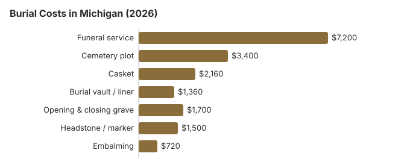

Burial Costs in Michigan (2026)
A Michigan burial is paid to three different sellers: the funeral home for the service (about $7,200 on our estimate), the cemetery for the plot and interment (from about $3,400), and a monument dealer for the marker ($500–$5,000).
Michigan Burial Costs by Item
| Charge | Estimate | Spread |
|---|---|---|
| Funeral service | $7,200 | $5,400 – $9,360 |
| Cemetery plot | $3,400 | $1,700 – $6,800 |
| Casket | $2,160 | $720 – $5,760 |
| Burial vault / liner | $1,360 | $800 – $10,000 |
| Opening & closing grave | $1,700 | $500 – $3,000 |
| Headstone / marker | $1,500 | $500 – $5,000+ |
| Embalming | $720 | $500 – $1,500 |
A word on these figures: no Michigan cemetery or funeral home was surveyed. Each line is a modelled estimate for budgeting a burial, not a quote or professional advice; see the method and the disclaimer.

Counting every cemetery charge, a Michigan burial generally totals $16,320 to $20,820, depending on the family's choices.
Kinds of Burial in Michigan
- Direct burial: prompt burial with no embalming, viewing or service; the cemetery still charges for the plot and opening.
- Learn about green burial
Lowering a Michigan Burial Bill
Where the savings are:
- Request itemized pricing from every provider: a General Price List is mandatory for Michigan funeral homes. Cemeteries have no such duty, but most around Michigan will hand over an itemized price sheet when you ask for that rather than a "package." Timing matters as well, because under MCL 333.2848 the funeral director who first takes custody must obtain the authorization for final disposition within 72 hours of the death, on a state form signed by the local or state registrar.
- Ask the township clerk: many Michigan townships own their cemeteries, and they and fraternal cemeteries rarely advertise online. The township or county clerk can give you current plot fees for public grounds.
- Ask who owns the home: many Michigan funeral homes are still family businesses, and they tend to price nearer the NFDA medians than chain-owned ones.
- Consider direct burial: burying promptly with no viewing or service is a common, accepted choice in Michigan.
- Compare the $2,160 Michigan casket estimate with the casket buying guide and the list of online casket retailers.
- Ask about a liner: it costs well under a full vault ($1,360 in our table) and many cemeteries accept one.
- Drop the extras: without a viewing, service or embalming, much of the $7,200 service estimate falls away.
Comparing Michigan Burial Prices
Ask two or three Michigan funeral homes to walk you through their price lists by phone; padded packages and the going rate both show up quickly.
Burial Resources
- Funeral Consumers AllianceNonprofit consumer advocacy for funeral pricing
- Headstone & Monument GuideCosts, types, and buying tips
- Green Burial OptionsEco-friendly and natural alternatives
- Best Online Casket RetailersCaskets bought online often cost less
- Best Burial InsuranceCompare plans to cover burial expenses
Compare Funeral Costs
- Average Funeral Cost in 2026National cost breakdown with real prices
- Cremation vs. Burial Cost ComparisonSide-by-side price comparison to help you decide
- Funeral Cost BreakdownEvery line item explained: know what you're paying for
- Cheapest Funeral OptionsLower-cost alternatives, with typical price ranges
- Direct Cremation: Most Affordable OptionNFDA 2023 median $2,645 with a family-supplied container (latest available)
- How to Compare Funeral PricesStep-by-step guide to getting the best price
Shopping for a casket or headstone? Compare the online casket retailer guide and the headstone cost guide. If you need money toward the burial, start with the payment assistance guide.
Frequently Asked Questions
What does a Michigan burial cost altogether?
Begin with about $7,200 for the service and $3,400 for the plot, then add the vault ($1,360), grave opening and closing ($1,700), casket ($2,160) and headstone ($500-$5,000). The usual Michigan total is $16,320 to $20,820.
Must a Michigan burial have a vault?
Not under Michigan law. Vaults are a cemetery requirement, and many Michigan cemeteries accept a less costly grave liner, so ask before paying about $1,360 for a vault; our range runs from $800 to $10,000.
What is the cheapest burial in Michigan?
Direct burial, with no viewing, service or embalming. A natural burial in a biodegradable container is close behind where a cemetery offers it.
Which Michigan cemeteries cost less?
Usually the public ones. Township, county and fraternal cemeteries charge well under commercial memorial parks, but they rarely advertise, so ask the township or county clerk for current plot fees. Prices can differ widely inside a single city.
Does State Emergency Relief cover a Michigan burial?
Only a small part. For 2026, MDHHS's State Emergency Relief program pays $875 toward a burial with a memorial service and $610 without one, and the provider's total has to stay within SER limits. Against a usual Michigan burial of $16,320 to $20,820 (service $7,200, plot $3,400, casket $2,160, vault $1,360, opening and closing $1,700, headstone $500-$5,000), that points toward a direct burial, a township cemetery and a liner. Ask MDHHS about SER before signing with a cemetery.
Can I have a green burial in Michigan?
In parts of the state. A handful of Michigan cemeteries are entirely natural and more set aside hybrid sections; call nearby cemeteries and see the green burial guide for what to ask.
More for Michigan
Certificates the Michigan cemetery and estate will need
The funeral director files the death certificate, but the family orders certified copies. From the state, a search with one copy costs $34, and further copies of the same record ordered together are $16 each; rush service adds $12 (MDHHS, ordering vital records; checked October 29, 2026). County clerks sell copies too, usually faster and sometimes for less.
- A cemetery deed transfer, a life insurance claim and each bank or pension usually need their own certified copy.
- Michigan death records are open, so a relative or executor can order without proving a relationship.
Michigan burial oversight, SER and veterans' graves
Funeral homes arranging a Michigan burial are licensed by the Department of Licensing and Regulatory Affairs (517-241-9221). Cemeteries answer to their own rules and regulator, so ask a cemetery who oversees it before you buy a plot.
Michigan is one of the states where a licensed funeral director must file the death certificate, move the body, supervise the disposition and get the permits (Mich. Comp. Laws § 700.3206, as summarized by the Funeral Consumers Alliance); the cemetery opens and closes the grave. Once the permit is in hand the burial may proceed; cremation also needs only a permit, with no waiting period (Mich. Comp. Laws § 333.2848).
State Emergency Relief
For 2026, SER pays $875 toward a burial with a memorial service and $610 without one, with lower cremation amounts (Michigan MDHHS). Against our $16,320-plus Michigan burial total it is a small contribution, and the provider's total has to stay within SER limits.
Veterans
An eligible veteran's plot, opening and closing, liner and marker are free at Great Lakes National Cemetery in Holly (248-328-0386) or Fort Custer National Cemetery in Augusta, near Battle Creek (269-731-4164) (VA National Cemetery Administration). The VA lists no state-run veterans cemetery in Michigan.
Who regulates the cemetery
Private cemeteries are registered by LARA's Cemetery Commissioner under the Cemetery Regulation Act (1968 PA 251, MCL 456.521 et seq.), who audits their trust funds and investigates complaints (517-241-9221). Each must keep an irrevocable endowment and perpetual care trust and deposit at least 15% of every month's grave, crypt and niche sales, never less than $20 for a single burial-right sale (MCL 456.536); only the income may be spent, on mowing, grave repair and upkeep. Municipal and church cemeteries are exempt, so ask a township or parish cemetery how it pays for long-term care.
Before buying a Michigan plot
- Ask the cemetery for a written price sheet; the funeral home's list won't show its charges.
- Ask whether the cemetery requires a vault or will take a cheaper liner.
- For a veteran, ask Great Lakes or Fort Custer what papers they need; the DD214 comes first.
- If a funeral home's burial charges don't match its price list, complain to LARA, 517-241-9221.